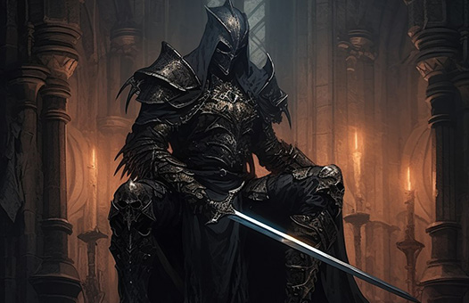
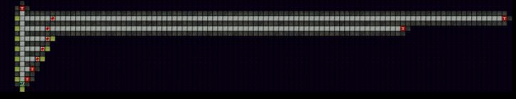

Существует 5 видов древних боссов, все они проживают в старом склепе. Путь к древним преграждают барьеры которые имеют ограничения по уровню персонажа, который может к ним пройти. А также для прохода через них, нужны заряды рунного кристалла.
Древний Император 75+ заряды в старом замке
Древний Лорд 65+ заряды в забытых могильниках 2 этаж
Древний Чемпион 50-65 заряды в особняке вампиров
Древний Рыцарь 35-50 заряды в чёрной башне
Древний Воин 20-35 заряды в паучьем подземелье
Чтобы пройти к древнему, необходимо сперва выполнить квест, Следы во тьме. В награду выбираем рунный кристалл. Для прохода через барьер необходимо собирать заряды кристалла, соответствующие тому древнему, к которому собираемся идти, 1 заряд даёт возможность 1 раз пройти. Максимально кристалл вмещает 5 разных зарядов. Чтобы собирать заряды необходимо активировать рунный кристалл, при этом персонаж получает дебаф на 1 час, уменьшающий параметры аватара, хп и ману на 30% . Именно в течении этого часа персонажу доступна возможность собирать руны в определённых тупиках подземелий. Если не успели собрать за 1 раз все 5 зарядов, вы можете дождаться кд на кристалле, 24 часа, повторно активировать его и собрать оставшиеся заряды, либо идти к древнему с не полным кристаллом. Также можно сбросить кристалл, в таком случае все собранные заряды сбрасываются. Рекомендуется нажимать сброс кристалла если в прошлый раз вы не собрали все 5 зарядов, либо если меняете тип собираемой руны.
Чем выше уровень древнего, тем дальше от входа находится развилка, на которой необходимо повернуть для прохода к боссу. Стоит учитывать, что существует таймаут на вход в старый склеп равный 2 часам.

При проходе через защитный барьер необходимо выбрать сложность древнего. Существует 3 сложности:
* Воин – нет дополнительных модификаторов (вероятность выпадения древней вещи равна 30%, для Древнего императора – 100%)
* Рыцарь – сила монстров по пути к древнему увеличена на 50%, а самого древнего на 25%. Вероятность выпадения древней вещи равна 100%. Для Древнего императора сила модификаторов древней вещи увеличена на 50%.
* Лорд – сила монстров по пути к древнему увеличена на 100%, а самого древнего на 50%. Древний начинает сражение с усиленными Ангелом-хранителем и Крысиным королем на своей стороне. Вероятность выпадения древней вещи равна 100%. Сила модификаторов древней вещи увеличена на 100%. Для Древнего императора сила модификаторов древней вещи увеличена на 150%.
При проходе к древнему можно использовать отряд, каждый участник отряда должен потратить 1 заряд своего кристалла для прохода через барьер. По дороге от барьера до древнего встречаются достаточно сильные монстры, зависящие от самого древнего, чем сильнее древний, тем больше шагов нужно пройти, и тем сложнее монстры. При подходе к боссу, когда подходишь вплотную, меняется фон основного фрейма на пафосное изображение, таким образом можно подготовится к бою, использовать сосульку или дождаться полного регена, распустить отряд если надо. Проводить бой с древним можно как отрядом, так и каждым персонажем по отдельности, за каждого убитого древнего награда выдаётся одному персонажу, который на древнего напал. В бою с древним не работаю кристаллы спасения. После завершения боя всех участников отправляет на кладбище, таким образом один персонаж не может поучаствовать в нескольких боях с древним.
В награду за убийство древнего босса можно получить древний предмет экипировки, который имеет одну или две усиленных характеристики(и/или параметра). Для лорда и императора(65+ и 75+ уровни) список доступных предметов совпадает, выпадают магазинные предметы максимального уровня (кроме некоторых исключений) а также предметы из комплектов альматеи и беллиара с 30% шансом. Сила бонусных модификаторов для императора на 3 сложности примерно соответствует 85 единицам, для лорда 37. Для лорда на первой сложности сила предметов около 23 единиц, таким образом по факту сила модификаторов при максимальной сложности не увеличивается на 100% (увеличивается с 23 до 37 для лорда). Для древних более низкого уровня выпадают предметы ниже уровнем, примерно соответствующие требованиям для прохода через барьер.
Примеры боёв с древними:
Император 3 сложность: тёмный маг, перегруз, воин, алхим, ангел, чумной
дорога к нему 1, 2 дорога к древнему достаточно сложная, нужно быть готовым
Особенность тактики боя с древним императором – крайне не рекомендуется, чтобы босс применял заклинание доминион, он его применяет, если в команде игрока больше двух участников, и за древнего уже призван ангел хранитель, и фантом (если условия для призыва фантома выполняются, а именно, есть аватар у которого хп больше чем мана). Таким образом, либо убиваем древнего в 1-2 одновременных участника боя (ангел+воин света например), либо крайне быстро убивает фантомов и ангелов хранителей, чтобы древний призывал их постоянно.
Лорд 3 сложность: воин+свет, чумной, ангел
Чемпион 3 сложность: ангел+алхим
В бою с древним стоит учитывать: все древние кроме императора имеют отражения боли. Удары древнего могут наложить помешательство. Древний имеет большое количество поглощения урона, 66% магического и физического, и 30% временного.